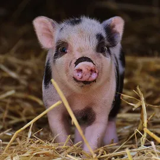

ცხოველებისთვის
თანაგრძნობა მოქმედებაში
მცენარეული არჩევანი კეთილშობილური ნაბიჯია. მას შესაბამისობაში მოყავს თქვენი ყოველდღიური ქმედებები საყოველთაო თანაგრძნობის ღირებულებასთან. ვეგანური კვებით თქვენ პირდაპირ ამცირებთ მოთხოვნას ისეთი სისტემების მიმართ, რომლებიც პირდაპირ იწვევენ ცხოველთა ტანჯვას, და არჩევთ ცხოვრების სტილს, რომელიც პატივს სცემს ყოველი ქმნილების სიცოცხლესა და თავისუფლებას.